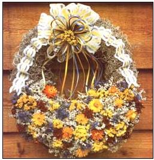
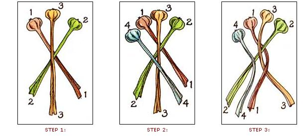
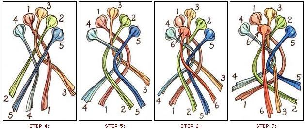

When this year's holidays arrive, share these lovely keepsakes.
[GARLIC BRAIDING BY THE NUMBERS]
THE SURPRISING NIP OF a morning chill, the first fallen leaves and yellowed vines, the subtle shortening of evening light-all are phrases in nature's announcement of the end of the season. While harvesting still-thriving tomatoes and bouquets, the home grower heeds the message-knows that fresh flowers and fruits will soon be things of the past and yearns to save a few mementos of garden life to warm the long winter months ahead.
It can be done. Simple yet striking garlic braids...decorative wreaths bursting with colorful dried flowers...harvest-symbol corn hangings...and straw hats gaily decked with blooms are four souvenirs of summer that you can put together easily at home. These craft creations can brighten your winter hearth or be given away as presents. (They can also be sold to bring in a little extra pre-holiday income.) And you can gather virtually all the materials you need from your own garden or by foraging from nearby fields or lots.
Olivia Abel and Susan Sides, MOTHER's gardeners past and present, have made these growers' gifts every fall for years. With their help, and that of Kathy Askew (a local craftswoman whose dried flower wreaths are shown in the photograph), we'll share the secrets that will make your own garden as "giftworthy" as theirs.
Maize Decorations
Hung at the doorway or inside the home, ornamental dried corn clusters are signs of harvest fertility-preserved tributes to the fields and garden. The traditional ornaments bespeak a household grateful for nature's bounty.
Maize decorations (as Susan likes to call them) are the simplest to make of the four crafts presented here. They're fashioned from field corn or popcorn since, unlike sweet corn, these varieties are normally dried. Seed companies generally list their colorful hard corns under such headings as Indian, ornamental, calico or multicolored.
Don't harvest the corn until it has dried thoroughly. Then store the ears-away from the elements and varmints-until you're ready to work. (If you'll be storing them for more than a month, spread the ears out one layer thick instead of piling them in heaps.)
To begin each maize decoration, peel back, but don't remove, the husks. Then stack three ears together pyramid fashion: two on the bottom and one on top. Tie them together, where the husks and cobs meet, with stout string or pliable wire.
While the cluster is decorative as is, Susan often adds dried flowers, seedpods, grass stalks or feathers for an extra touch. She gathers many of the wild materials in the fall. She also grows several of the flowers she uses dried, such as acroclinium, globe amaranth, statice, strawflower, scabiosa (or starflower), nigella and celosia. Dried blooms or foliage from such herbs as artemesia, chives, lavender, tansy, blue spire sage and emerald sage can also be put to good use. (Remember, most flowers will last longer if harvested before they're fully open. They also dry best if hung in bunches upside down.)
Susan first arranges each bouquet of decorations in her hand, then ties the bundle together with light string or a length of ribbon (with a bow) and binds it to the corn ears. When she plans to give the decoration as a gift, she often attaches a card telling a little bit about that particular type of corn, how it's grown and how to use it in the form of cornmeal. She might even include a jar of hand-ground meal made from extra ears.
Dried-Flower Straw Hats
Hats decked with flowers add splashes of spring and summer color to their wearers, bringing to mind summerfests, picnics in the meadow and Maypoles. Consequently, they make very popular gifts, both for wearing and for adorning walls. They're lucrative craft items, as well. Kathy Askew asks around $20 per hat. (In comparison, maize decorations generally sell for $5 to $12.)
You can buy the hats themselves at import stores, dime stores and flea markets. (Perhaps a local craft-supply outlet can direct you to a wholesaler if you want to buy in bulk.) Buy only hats with tight weaves and solidly made rims, so they'll be less likely to fray or lose shape.
Your goal will be to add a band of summer color to each hat by overlapping small clumps of flowers or foliage all the way around, leaving no trailing stems to show. You may want to first put down a layer of background material such as Spanish moss, lamb's ears or artemesia. Susan's particularly fond of the artemesias Silver King and Silver Queen, since their fullness and silvery gray color make for a wonderful background, and they can be woven round hats (and wreaths) when freshly cut and pliable, then allowed to dry in place.
Many wild garnerings such as rabbit tobacco, mints, grass heads, Queen Anne's lace and various seedpods can be used to decorate the hats. The same homegrown flowers and herbs used to garnish corn hangings also work quite well.
To attach this dried bounty, some people sew clusters to a ribbon and then glue or sew that band to the hat. Others stitch the flowers directly in place. These methods are slow, but fine for decorating an occasional hat. To speed up the whole process, use a hot-glue gun (available at craft-supply, hardware or department stores). Squeeze the trigger on this electric tool, and the end of the glue stick at its tip begins to melt. Starting at any point around the hat base, you can apply a quarter-sized dab of hot glue, attach a few decorative sprigs, shoot another dab of glue, add more foliage and so on.
A hot-glue gun is easy to use and its adhesive dries quickly. But watch out: The tip and adhesive get dangerously hot. Be especially careful never to leave one unattended around children-it looks a lot like a toy!
Dried Wreaths
Straw wreaths decorated with dried blooms make rings of beautifully subtle colors-just what the gardener ordered to banish doldrums from the winter home. They also offer a wide choice of patterns and hues for creative crafting. And they can be made with many of the same foraged and grown adornments that are used on corn hangings and straw hats.
You can probably buy the wreath foundations at a local craft-supply shop for about a dollar each. Olivia Abel often makes hers, using a homemade form-a wooden board with eight to ten dowels arranged in a circle-to help shape the rounds. (You can, instead, hold a dinner plate up to your work as a guide.)
To make a wreath foundation, tightly bunch a handful of hay and start coiling string or thin wire (Olivia's choice) around it. Add hay as you go, looping the wire close and tight so the wreath won't break anywhere. Once you've worked your way around to form a complete circle, wrap it an extra time or two to provide reinforcement. Then tie the wire off and use scissors or pruning shears to clip off all the loose straw ends that poke out. The foundation-making process takes about 10 minutes.
Most of Olivia's wreaths are about one foot across. You can make yours larger if you wish, but be forewarned: Wreaths use much more decorative foliage and flowers than do maize decorations or straw hats, so it's easy to run out of material.
Now comes the fun part. Figure out the patterns and flowers you want to use, then start tying a bunch of flowers on with wire (not string) wrapped around the stems. Once your first clump is secure, lay a second one down so it covers up the first group's stems, and bind that in place. Continue laying flowers over stems all the way around. When you reach the end, tuck some stiff=stemmed flowers under the first batch, completely hiding the wire and stems. (If you want to make a lot of wreaths, forget the wire. Follow Kathy Askew's lead and attach the flowers with that ever-useful aid, the glue gun.)
Olivia's favorite wreath pattern consists of one mild-colored plant as background, highlighted by five or six clusters of bright flowers. Another common pattern is the "crazy quilt," where you run a continuous series of clusters-each in a single color-all the way around. Susan sometimes makes an outer ring of one color and texture and an inner ring of another.
Kathy Askew (who sells her wreaths for anywhere from $10 to $48) has even more creative ideas. She'll weave a circle of grapevines and lushly foliate only the lower third of it. The result? A "basket wreath." Or she'll build a small heart-shaped wreath by tying two clumps of hay together at the bottom, wiring up the two sides, bending the tops in and then binding them in the middle. She'll totally cover its front with loose petals and leaves left over from other efforts. The whole is topped off with a bow for a gay valentine effect.
Choice materials for wreath backgrounds (be creative!) include German statice, baby's breath, lamb's ears, tansy, pearly everlasting, goldenrod, joe-ye weed, ironweed, white yarrow, hydrangea, foraged plumes and sumac. Strawflower, statice, acroclinium, globe amaranth, errant, celosia, golden yarrow and nigella provide attractive highlights.
Garlic Braids
The lovingly laced strands of a garlic braid hanging in the kitchen are a sight that strikes the senses, evoking the rich smells and pungent tastes of meals to come. This cook's delight also is the most useful of the garden craftings presented here, because-if you can bear to disassemble it-you'll eventually use it all up. (Or you might plant the cloves next spring and grow an abundance of braid makings.)
To make one braid, you'll need at least 15 or 16 homegrown and partly dried garlic bulbs, complete with tops. Pick ones that have long stems and are all about the same size. Then clean them by rubbing off the dirty outer skin layers and clipping off any root hairs.
You'll start with three bulbs and add one more at a time as you braid-a technique called French braiding. Work tightly and neatly, making three distinct rows of bulbs as you go. Follow the accompanying step-by-step drawings. But don't let the directions throw you off-this is a lot easier to do than to explain.
Keep fumbling along even if you lose track of what you're doing-the braid almost always looks good in the end. When you're done, tie the remaining stem ends together with string. Hang the braid-stems up-on a hook in the kitchen and take bulbs off from the top as needed. The garlic should stay fresh for a year or more.
You can go on to adorn your garlic braids with dried strawflowers, statice, celosia, cayenne peppers, golden yarrow, marjoram, oregano or thyme. Such highlights can fill in gaps, but don't clutter up the basic beauty of the braid itself. To add strawflowers, run a thin, green 26-gauge wire (available from hobby shops) through each bloom from below, bend the tip of the wire, and pull it back down to hook into the head. (Do this the first week after you harvest the flowers, before they get too dry and brittle.) You can either wire your cayenne peppers or run strings through them with a needle.
It takes about 30 to 45 minutes to make one garlic braid (that includes cleaning the bulbs). They can be sold at craft shows, flea markets and roadside stands for about $12 (plain braids) to $16 (fancy ones).
By the way, if you don't have enough homegrown garlic to make your own braids this fall, now is the best time to plant some so you'll have plenty of big bulbs next year. Fall planting is one of the three keys to a good garlic crop. Set individual cloves an inch deep and five inches apart in well-drained soil fertilized with compost or aged (not raw) manure. The other two keys are good weeding (you can pretty much avoid that tedious task by mulching your new planting with a two-inch layer of leaves) and regular, thorough watering.
Preserve the Season
The time is ripe, in this lull between the hectic days of garden toil just past and the harried holiday season to come, to create this quartet of natural craftings. In the process, you'll be capturing and sharing some of the essence of summer's beauty to be enjoyed by others for seasons to come.
GARLIC BRAIDING BY THE NUMBERS
Illustrations By Kay Holmes Stafford
[Top]
|
STEP 1: Lay two bulbs down so their stems cross, and then set a third on top in the middle, with its stem running down between the other two. STEP 2: Now lay a fourth bulb on top, parallel to bulb number 1 in the drawing. STEP 3: Grab the stems of bulbs 1 |
 STEP 4: Take a fifth bulb, lay it on top and parallel to bulb number 2 (the other of the original crossing bulbs). STEP 5: Braid bulbs 2 and 5 up and over into the middle. STEP 6: Take a sixth bulb, and place it so its head sits just under the head of bul |
 |
|
 |
|
|